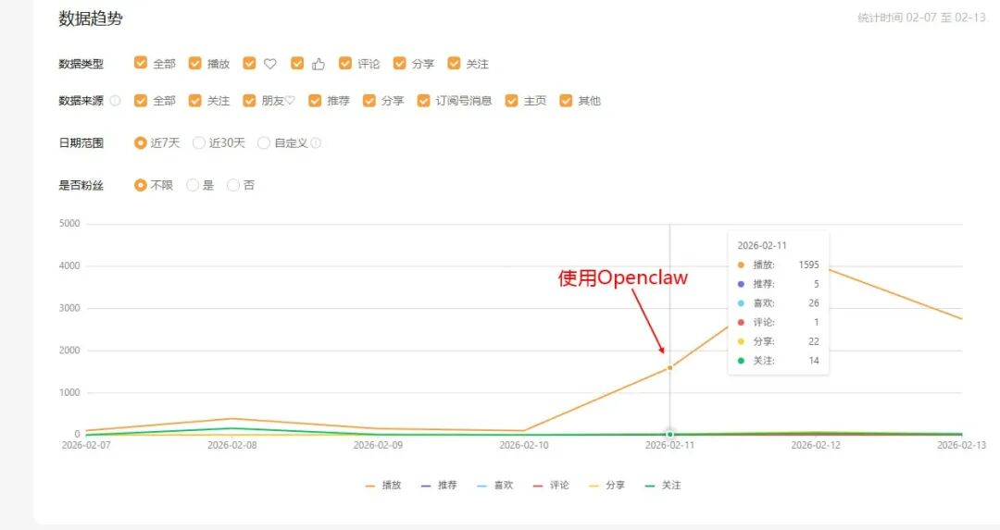
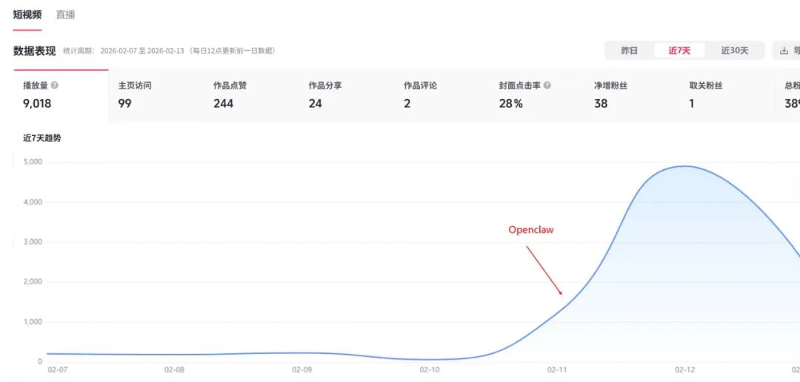
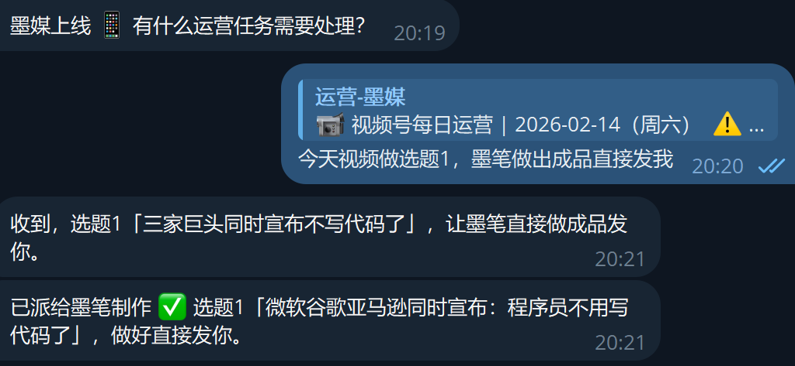
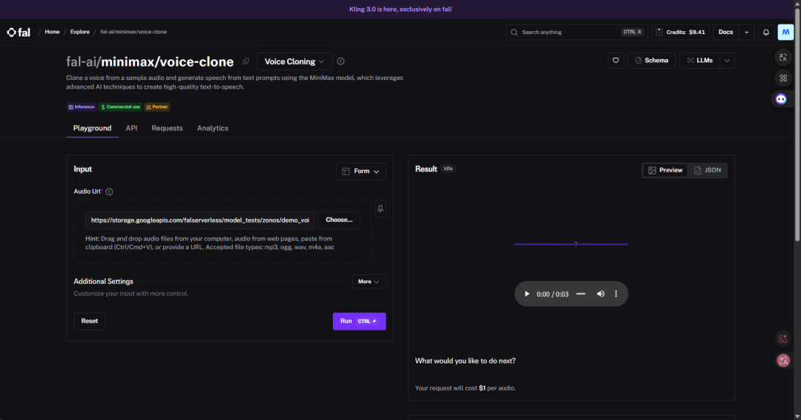
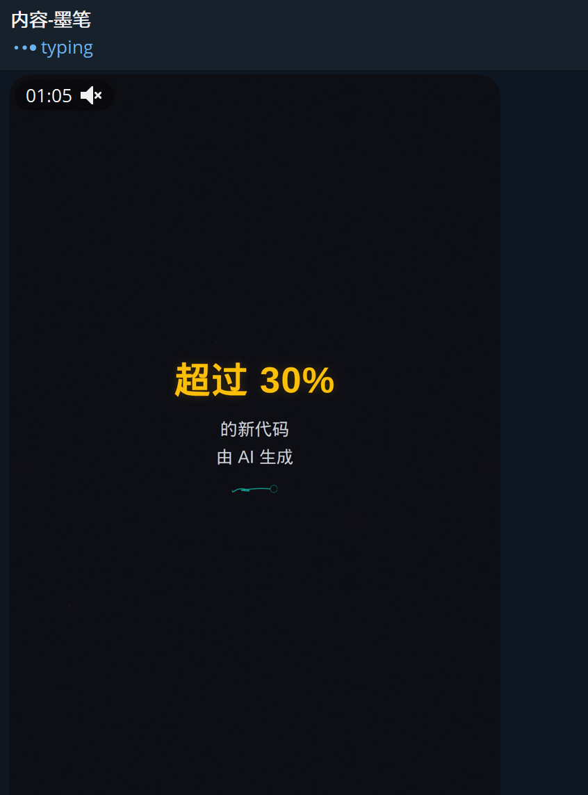
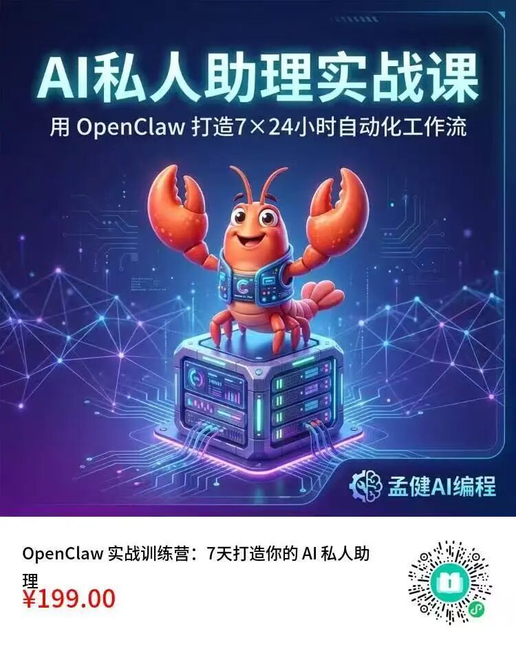

大家好，我是孟健。
我做视频号不用剪映，不用 PR ，甚至不碰任何剪辑软件。 一条 60 秒的短视频，成本一毛钱，从选题到成片 15 分钟搞定。
怎么做到的？OpenClaw（开源 AI 助理框架）+ Remotion（React 视频框架）+ 语音克隆，三件套组合拳。
先看成品👇
今天把整套流水线拆给你看。
01 先说数据：用 AI 做视频比我自己拍还好
前几天我开始用 OpenClaw 全自动做视频号内容。结果出乎意料——AI 做的视频，数据比我自己拍的好得多。
之前我自己录制、剪辑，一条视频播放量几十到两三百，偶尔破千算运气好。
换成 OpenClaw 全自动流水线之后：
单条播放量：1595（之前平均不到 200）
3天 总播放：9,018


从 02-11 开始用 OpenClaw 做视频的那天起，播放量曲线直接起飞。之前一周加起来可能还不到 1000 播放。
为什么 AI 做的反而更好？我想了想，原因有三个：
更新频率上去了。以前一周发 1-2 条，现在可以日更。视频号算法喜欢活跃的账号。
风格统一了。每条视频都是同一个"赛博线框"模板，辨识度高，观众看到就知道是我。
质量反而稳定了。人工拍摄状态有起伏，AI 生产线的输出质量是恒定的。
02 整套流水线长什么样
传统做一条 60 秒视频号内容：
写脚本：30 分钟
录音/配音：20 分钟
剪辑+字幕+动效：1-2 小时
导出上传：10 分钟
总耗时：2-3 小时，还得会剪映或 PR 。
我现在的流程：
Agent 自动推送选题，我选一个：1 分钟
Agent 写旁白 → 克隆我的声音生成 TTS → 提取时间戳 → Remotion 渲染成片：约 10 分钟
我看一遍，确认发布：2 分钟
总耗时：约 15 分钟。成本不到两毛钱。不需要会任何剪辑软件。
03 技术栈：四个关键零件
零件一：OpenClaw — 多 Agent 调度中心
OpenClaw 是一个开源的 AI 助理框架，核心能力是让多个 AI Agent 协作。我的团队里有 6 个 Agent，各管一摊：
墨媒（运营）：负责选题推送和发布
墨笔（创作）：写脚本、调 TTS、编排场景、渲染视频
墨影（设计）：封面图和配图
视频制作主要是墨笔在干活。它收到选题后，一路跑完脚本→配音→渲染，全程无人值守。

Agent 之间怎么协作？ OpenClaw 有个sessions_send机制，Agent 之间直接传消息。墨媒推选题给墨笔，墨笔做完发成片链接给墨媒，墨媒通知我确认。像一条流水线，每个工位各干各的。
零件二：Remotion — 用 React 写视频
这是整套方案最"反直觉"的部分。
Remotion 是一个 React 视频框架。你写 React 组件，它帮你渲染成 MP4。 没有时间轴，没有图层面板，视频就是代码。
为什么用代码做视频？因为可复用、可模板化、可自动化。
传统剪辑：每条视频从零开始拖素材。
Remotion：定义好模板，换数据就出新片。
我的视频模板叫"赛博线框批注体"——深色背景、大字排版、小墨（我的 AI 猫助手）线条画穿插批注。风格统一，辨识度高。
核心代码结构长这样：
// scenes-data.ts — 这是唯一需要改的文件
export const scenes: SceneData[] = [
{
start: 0.0, // 开始时间（秒）
end: 3.46, // 结束时间（秒）
type: 'title', // 场景类型：决定动效
title: '三家巨头\n同一天',
xiaomo: 'peek', // 小墨姿态
},
{
start: 3.46,
end: 5.90,
type: 'pain',
title: '微软说',
subtitle: 'Copilot 已经能写掉\n90% 的代码',
number: '90%',
highlight: 'Copilot',
},
// ... 更多场景
];
每条新视频只需要改这一个文件。 场景类型决定动效——title用 glitch 闪现，emphasis用 slam 砸入，circle用猫爪画圈。动效和排版都是预设好的，换内容自动适配。
渲染一行命令：
npx remotion render WireframeVideo out/成片.mp4 --codec=h264
零件三：MiniMax 语音克隆 — 用我的声音说话
视频号的配音是我自己的声音，但不是我录的。
MiniMax 的 voice-clone 服务，用一段 30 秒的录音样本，克隆出一个可以说任何话的语音模型。生成速度快，一段 60 秒的旁白 3-5 秒出结果。

通过 fal.ai 的 API 调用，1.15 倍速，对话感很强。一条视频的 TTS 成本大概一毛钱。
零件四：Whisper — 时间戳精确对齐
TTS 生成的音频，需要知道每句话在第几秒说完，才能让 Remotion 的字幕精确对齐。
OpenAI 的 Whisper 模型（本地部署，免费）转录音频，输出逐句时间戳：
[
{"start": 0.0, "end": 3.46, "text": "三家巨头同一天说了一件事"},
{"start": 3.46, "end": 5.90, "text": "微软说Copilot已经能写掉90%的代码"},
...
]
这些时间戳直接灌进scenes-data.ts，每个场景的出场时间和旁白完美对齐。
04 完整流程：一条视频是怎么从 0 到 1 的
墨媒推选题（cron 每日 9:30）
↓ Telegram 推送5个选题
孟健选一个
↓ 选题确认
墨笔写旁白脚本（60秒，200字左右）
↓
MiniMax TTS 生成克隆语音
↓ 约¥0.1，3秒出结果
Whisper 提取逐句时间戳
↓ 本地运行，免费
墨笔编排 scenes-data.ts
↓ 按时间戳填场景类型+文案
Remotion 渲染 MP4
↓ h264编码，约2分钟
墨笔发成片给孟健
↓ Telegram 通知
孟健确认 → 墨媒发布
关键点：从"孟健选一个"到"成片发出来"，中间全自动。 墨笔这个 Agent 收到选题后，自己写脚本、调 TTS、提时间戳、编场景、渲染视频、发通知。我只需要在 Telegram 里点一下确认。

整个过程大约 10 分钟。我的参与时间？选题 1 分钟，看成片 2 分钟。
05 赛博线框体：为什么选这个风格
视频号做内容有个核心矛盾：你得快，但你不能糙。
实拍太重（一个人搞不过来）。AI 生成画面太假（观众已经审美疲劳）。PPT 录屏太无聊。
我选了一条中间路线：纯文字动画 + 线条 IP 角色。
深色背景（#0A0A0F），不刺眼，高级感
大字排版，关键词高亮（cyan/gold/red 三种色系）
小墨（线条猫）在角落做批注动作（探头、趴着、指向、画圈）
动效精确对齐音频：glitch 嗞声配标题出场，slam 低频咚配数字砸入，draw 笔触声配猫爪画圈
BGM 18%音量打底，不抢旁白
这个风格的好处：全部是代码生成的。 没有一帧需要手画。小墨的 6 种姿态是 SVG 路径，动效是 CSS 动画函数，排版是 React 组件。换内容不换风格，视觉统一，品牌感强。
而且成本极低——Remotion 渲染不花钱，只有 TTS 那一毛钱。
06 踩过的坑
坑 1：TTS 速度和自然度的平衡
1.0 倍速太慢，像念稿。1.3 倍速太快，听不清。1.15 倍速是甜点。 这个参数调了好几轮才定下来。
坑 2：时间戳精度
Whisper 的时间戳偶尔会飘几百毫秒。解决方案是渲染后快速过一遍——15 分钟的流程里，2 分钟用来看成片，不算浪费。
坑 3：Remotion 的字体加载
服务器渲染时字体可能缺失。解决方案：把字体文件放到public/目录，用@font-face显式加载，别依赖系统字体。
坑 4：音效对齐
动效和音效必须精确到帧。Remotion 的Sequence组件按帧计算（30fps），但时间戳是秒。需要做Math.round(seconds * fps)的换算，差一帧观感就不对。
坑 5：不要让内容 Agent 降模型
试过把墨笔从 Claude Opus 换成 Sonnet 省钱。6 分钟就换回来了——脚本质量断崖式下跌，金句变废话，节奏感全无。内容创作是最不该省的环节。
07 成本算账
对比请人做：一条 60 秒视频号内容，外包报价 300-800 元。
2 小时变 15 分钟，800 块变一毛钱，播放量反而翻了 10 倍。 这就是把视频从"项目"变成"工序"的意义。
08 你能复制这套流程吗？
技术门槛说实话不低。你需要：
一台服务器（跑 OpenClaw + Remotion 渲染）
基本的 React 能力（定制 Remotion 模板）
OpenClaw 部署经验（配 Agent + cron）
MiniMax/ElevenLabs 账号（TTS）
但思路是通用的：把视频生产拆成可编程的环节，用 Agent 串起来。
你不一定要用我的技术栈。Remotion 可以换成 FFmpeg 纯命令行（更简单但动效少），TTS 可以用免费的 edge-tts（质量差一些但零成本），Agent 框架也不一定是 OpenClaw。
核心不是工具，是思路：视频 = 数据 + 模板 + 自动化。
写在最后。
我做这套系统不是为了炫技。是因为一个人创业，内容是最大的杠杆，但时间是最稀缺的资源。
传统做内容是"创作"——每次从零开始。AI 时代做内容是"生产"——定义好流水线，然后持续出货。
15 分钟一条视频，成本一毛钱，播放量比自己拍还好。工具就摆在那里。用不用，是你的事。
openclaw视频课程18节，小白从零搭建，随到随学：

🚀 想要与更多AI爱好者交流，共同成长吗？
📚 精选文章推荐
AI 编程的临界点：当三家巨头同时宣布我们不写代码了 测完 GLM-5 我沉默了：国产开源模型什么时候这么能打了？ 我用 OpenClaw 写文章，10 分钟发 14 个平台，全流程拆解 Vibe Coding 已死，Karpathy 说未来叫 Agentic Engineering OpenClaw 2.6 调教实录：从崩溃 4671 次到省 50% token 吹爆 OpenClaw！一个人 +6 个 AI 助理，我再也不想招人了 16 个 AI Agent 协作从零写出 C 编译器，还能编译 Linux 内核——Claude 4.6 做到了 神仙打架！Claude Opus 4.6 vs GPT-5.3-Codex 同日发布，AI 编程格局要变了 Claude 一个插件，让全球软件股蒸发 2850 亿美元 我做了个 OpenClaw 入门站，7天教程 + 70篇资源全网最全